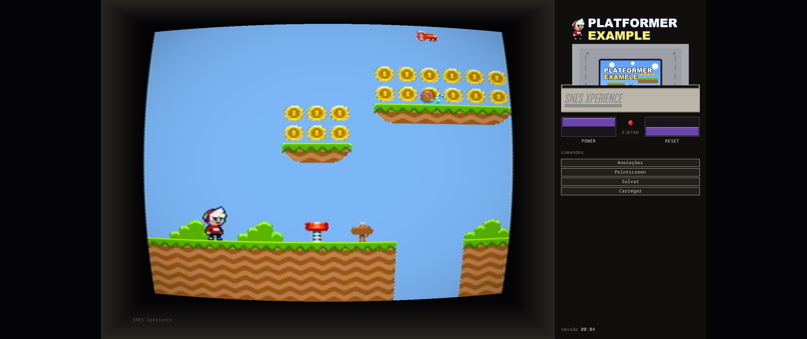
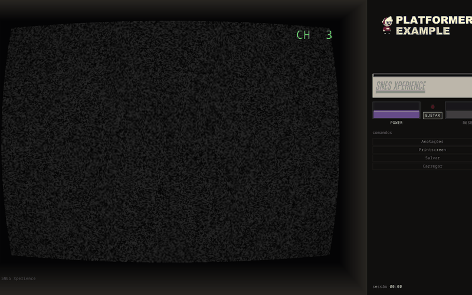
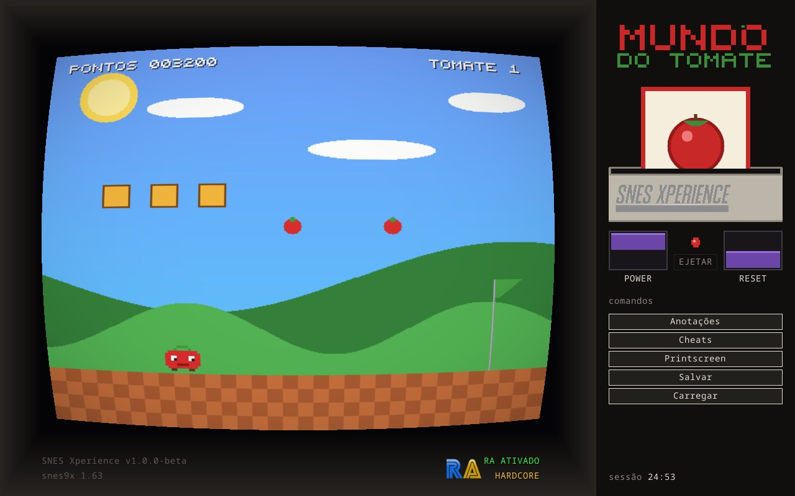

manual do proprietário
SNES
Xperience
Um console inteiro na sua TV — gabinete, tubo CRT e cartucho de verdade — em vez de só uma janela com o jogo.
v1.1.5 SDL3 embutido · macOS / Windows / Linux / Steam Deck

O console
A maioria dos emuladores te dá uma janela. O Xperience te dá o aparelho: a tela acorda em estática no Canal 3, você escolhe o jogo na estante, o cartucho desce e encaixa no slot com um clique — e o console só liga quando você aperta o Power, igual ao hardware.
O tubo usa o filtro NTSC RF do blargg com scanlines, curvatura e vinheta; a imagem abre em tela cheia na resolução nativa do seu monitor — laptop, TV ou Steam Deck. Tudo se opera com mouse e gamepad; a única exceção é escrever uma anotação, que precisa de teclado por natureza.
E é portátil de verdade, zero nuvem: sem banco de dados e sem raspagem online — tudo em pastas ao lado do app, que você carrega onde quiser.
Como ligar
-
passo 1
Baixe o app
Última release: DMG para macOS, zip para Windows e AppImage para Linux — todos com a SDL3 embutida, sem instalar dependência nenhuma.
-
passo 2
Coloque seus jogos
Arraste suas ROMs
.sfc/.smcpara a pastaroms/ao lado do app. Um botão na estante as renomeia para o padrão canônico No-Intro se você tiver o DAT. -
passo 3
Instale o núcleo
Na tela inicial, o botão “Baixar núcleo snes9x” traz o núcleo do buildbot da libretro e o mantém atualizado — a seta verde só acende quando existe commit novo de verdade.
| macOS | Apple silicon (arm64), macOS 12+ |
|---|---|
| Windows | x86_64, Windows 10+ |
| Linux | x86_64 — AppImage autônomo; Steam Deck testado |
| controles | mouse + gamepad; teclado só para anotações |
A estante de jogos

A estante é a prateleira da sala: busca instantânea, faixa de favoritos, “jogados recentemente” e histórico — com tempo de jogo por jogo, contando só com o console ligado, e por sessão.
No painel do jogo, abas de informação, capa traseira e manual em PDF dentro da TV, com páginas viradas no próprio painel. Cheats curados em checklist e 15 slots de captura de tela nomeáveis moram no livro de anotações, que abre com o console pausado.
O cartucho

Escolher um jogo insere o cartucho de verdade: animação de descida, clique de encaixe, clique de destravamento — e ejetar só com o console desligado, como no original. Sem cartucho no slot, a TV insiste em Canal 3.
Conquistas na TV


Integração completa com o RetroAchievements: login nas configurações, identificação do jogo pelo hash da ROM e avaliação das condições em tempo real contra a RAM do núcleo — hardcore ou softcore, badge fixo no queixo da TV, progresso “X de Y (Z%)” no painel da estante, lista dentro da TV e medalha de quem zerou: dourada para 100%, prateada para quem chegou ao fim.
Especificações
| núcleo | snes9x (port libretro) — baixado e atualizado pelo app |
|---|---|
| vídeo | filtro NTSC RF do blargg, scanlines, tela cheia na resolução nativa do monitor |
| áudio | 48 kHz estéreo, com hiss de tubo opcional |
| código | Rust sobre SDL3, em quatro camadas de crates: apresentação, domínio, emulação, plataforma |
| pacotes | DMG / zip / AppImage com SDL3 embutida, gerados a cada release |
| dados | 100% locais — sem banco de dados, sem nuvem, sem telemetria |
Avisos & licenças
aviso importante
Nenhum jogo comercial aparece neste site e nenhuma ROM ou núcleo é distribuído com o app: suas ROMs são suas, e o núcleo snes9x é baixado direto do buildbot oficial da libretro.
sobre as telas de jogo
As imagens mostram o Platformer Example, homebrew open source de NovaSquirrel (código MIT; arte de Kenney, surt e GrafxKid via OpenGameArt, CC0/CC-BY). Ele também vem como pacote de exemplo pronto para instalar pelo modo dev — código Konami na tela inicial. Só as fotos de conquistas mantêm o homebrew fictício Mundo do Tomate, desenhado pixel a pixel para elas.
licenças
SNES Xperience é um projeto pessoal, sem fins comerciais, sob licença MIT. O snes9x tem licença própria não comercial — é por isso que o núcleo nunca vem no pacote. Terceiros listados em THIRD-PARTY-NOTICES.md. RetroAchievements é um serviço de terceiros e precisa de conta própria.